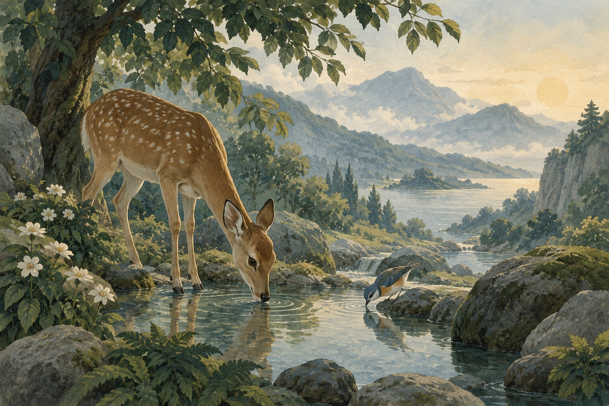

करुणा · Dhp 222
कुशल सारथी
उठते क्रोध को सँभालने वाले की तुलना चलते रथ को सँभालते सारथी से है। केवल लगाम पकड़ना दिशा देने के समान नहीं।
संपादकीय सारांश · शास्त्र का अनुवाद नहीं
इस तुलना में सारथी कुशल कब है?
थोड़ा और समझें
- क्रोध उठते ही सँभालने पर
महत्त्वपूर्ण क्षण वह है जब क्रोध ज़ोर पकड़ने लगता है। जल्दी पहचानने से अलग उत्तर की जगह बनती है।
उद्धृत अंश की संपादकीय व्याख्या
पाठ पूरा हुआ
मनन का एक पल · वैकल्पिक
क्रोध का एक शुरुआती संकेत देखें, जैसे कसा जबड़ा या जल्दी बोले शब्द।
यह आपके लिए है। कोई उत्तर सहेजा या आँका नहीं जाता।
यह पूर्वावलोकन प्रगति सहेजता नहीं है और उसे ऐप में नहीं भेजता।
iPhone ऐप के लिए वार्षिक सदस्यता ज़रूरी है। आपके क्षेत्र में App Store पर दिखाया गया मूल्य लागू होता है। कोई निःशुल्क परीक्षण नहीं है।
मूल अंश पढ़ें
धम्मपद • 222
अंश का संदर्भ
धम्मपद 222, थेरवाद त्रिपिटक में संरक्षित प्राचीन पालि पद-संग्रह। ये मौलिक अध्ययन-टिप्पणियाँ हैं, उद्धृत पालि का अनुवाद या सभी बौद्ध परंपराओं का प्रतिनिधित्व नहीं।
सारांश और व्याख्या मौलिक शैक्षिक नोट्स हैं, शास्त्र का अनुवाद नहीं। विभिन्न परंपराओं की व्याख्याएँ अलग हो सकती हैं।
Pali text: Mahāsaṅgīti Tipiṭaka Buddhavasse 2500, Dhamma Society; published by SuttaCentral. Original learning notes by Amitaba.
Public domain — Public Domain Mark 1.0. See bundled SOURCE-NOTICE.txt.
स्रोत वेबसाइट